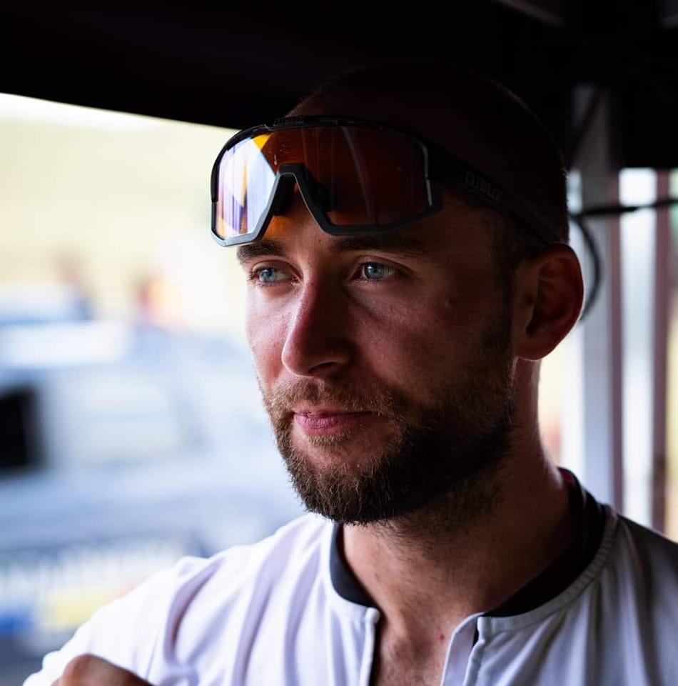

Aron Kolcze

Summary
I am a professional mountain biker from Romania, student at the sports University, and currently working at a bike shop.
Education
- "Mihai Viteazul" High School 2014
- Transilvania Sport University Brasov 2023-present
Work experience
Three surgeon
June 2018-August2020
- Driving van
- Manipulating tools and chainsaw machines
- Trimming and cutting threes that no longer proliferate or represent danger
- Making sure public areas are closed and the neccessary procedures can take place.
Customer service at Yahoo
February 2021-January 2023
- Helping customers regain access to their account
- Report compromised accounts
- Training colleagues to follow the procedures
Bike shop/service
September 2023-present
- Taking care of appoinment repaires
- Marketing on social media platforms
- Different bicycle repair procedures
Skills
- Customer Service
- Web development
- Organisational skills
- Training skills
Other
Hobbies
Contact me